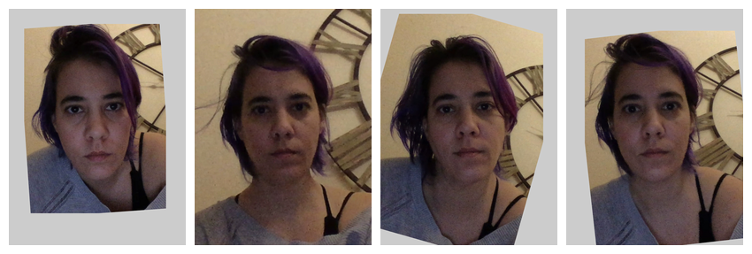

This vignette demonstrates the functions you can use to resize, rotate, crop, pad, and align images.
Load your images
stimuli <- demo_stim("composite", "multi")Resize
Resizing your images at the start of a chain can make everything go faster if you’re working with very large images, but can make them blurry if you make them too small.

Resized Images

Crop
You can set the new width, height, x-offset and y-offset in pixels (must be > 2) or proportions.

Cropped Images and Templates
Pad
Pad the top, right, bottom and left borders; set the colour with
fill.
stimuli |>
pad(top = 100, right = 200, bottom = 300, left = 400,
fill = c("dodgerblue", "hotpink")) |>
plot()
Padded Images and Templates
Or you can use the patch function to get the median
colour from a patch of the image. If you set patch to
TRUE, this will default to the top left 10 pixel
square.

Cropped images with background matched to top left 10-pixel square
Or you can set the boundaries of the patch manually. The code below sets the patch colour to the average colour from a 100x100-pixel square in the center of each image.
# get stimuli
# get center x and y coordinates of each image
cx <- width(rb)/2
cy <- height(rb)/2
r <- 50 # half-height of patch
rb |>
pad(50, patch = list(x1 = cx - r,
x2 = cx + r,
y1 = cy - r,
y2 = cy + r)) |>
plot(nrow = 2)
Cropped Images with background matched to centre.
Crop to Template
You can use the crop_tem() function to get the minimum
and maximum x- and y-values from a list of templates, then use that to
set the cropping. In the example below, the images are cropped so there
is 100 pixels of padding around the boundaries, calculated across all
images.

Set each to TRUE to calculate the boundaries separately
for each template in the list instead of the full set.

To Size
The functionto_size() combines crop and resize to get a
batch of images to the same size.
s <- demo_stim()[1]
multisize <- c(
s,
s |> resize(.5),
s |> crop(0.6),
s |> crop(1, 0.8)
) |> pad(10, fill = "hotpink")A 10-pixel pink border has been added to these original images so you can see what has been cropped in the subsequent images.

The code below resizes each image to fit into a 300 x 400 pixel image and fills in any extra background with blue.
 Set
Set
keep_rels = TRUE to brings the largest image to fit in the
new size, resize the others proportionally, and pad.

Set crop = TRUE to bring all images to cover new size
and crop the “overhang”. There is no need to set the fill color for
padding when crop is TRUE.

Set keep_rels = TRUE to bring the smallest image to
cover the new size, resize the others proportionally, and crop any
overhang.

Align
You can align a set of images on two points. By default, these are the first two points in the template, which correspond to the left and right eye in the standard FRL template and the Face++ autodelineation template.
stimuli |>
align(x1 = 350, y1 = 350, x2 = 450, y2 = 450,
width = 800, height = 800, fill = "grey80") |>
draw_tem() |>
plot()
If you have a set of misaligned images and don’t fill in coordinates
or dimensions, align() will align to the coordinates and
dimensions for the first image.

Or you can specify the reference image by index or name.

Procrustes Align
You can set the procrustes argument to TRUE to
procrustes-align the images and templates.

Currently, webmorph does not have this capability, but you can download your images and tems, procrustes align them with the R package, save the images and templates, and upload them back to webmorph.

Repeating images
You can use rep() to repeat images in a stimuli. Here,
we repeat the faces 3 times each, apply 6 different rotations with
different background colours, crop them to the same size, and plot them
with 6 different template point colours.
rainbow <- c(pink = "#983E82",
orange = "#E2A458",
yellow = "#F5DC70",
green = "#59935B",
blue = "#467AAC",
purple = "#61589C")
stimuli |>
resize(0.5) |>
rep(each = 3) |>
rotate(seq(10, 60, 10), fill = rainbow) |>
crop(250, 250, fill = rainbow) |>
draw_tem(pt.color = rainbow, pt.alpha = 1, pt.size = 5) |>
plot(nrow = 2)
Image functions
You can do so many things with the {magick} package that is installed
with {webmorph}. The function image_func() is just a
convenient wrapper that allows you to apply {magick} functions (or any
other function that takes a magick image as the first argument) to each
image in a stimulus list.
stimuli <- demo_stim("test", "m_")
imglist <- c(
image_func(stimuli, "blur", radius = 10, sigma = 5),
image_func(stimuli, "charcoal", radius = 5, sigma = 2),
image_func(stimuli, "oilpaint", radius = 5),
image_func(stimuli, "implode", factor = 0.25),
image_func(stimuli, "implode", factor = -0.25),
image_func(stimuli, "negate"),
# canny edge detection format is {radius}x{sigma}+{lower%}+{upper%}
image_func(stimuli, "canny", geometry = "0x1+10%+30%"),
image_func(stimuli, "edge", radius = 2),
image_func(stimuli, "modulate", brightness = 80),
image_func(stimuli, "modulate", brightness = 120),
image_func(stimuli, "modulate", saturation = 0),
image_func(stimuli, "modulate", saturation = 110)
)
labs <- c("Blur", "Charcoal", "Oilpaint", "Implode",
"Explode", "Negate", "Canny", "Edge",
"20% Darker", "20% Brighter", "Greyscale", "Saturated")
imglist |>
pad(80, 0, 0, 0, fill = "dodgerblue3") |>
label(labs, color = "white") |>
plot(nrow = 3)
The possible {magick} functions are listed by
image_func_types(). Check the magick package help for more
info on each (e.g., ?magick::image_oilpaint.
image_func_types()
#> [1] "annotate" "apply" "average" "background"
#> [5] "blur" "canny" "channel" "charcoal"
#> [9] "colorize" "combine" "composite" "contrast"
#> [13] "convert" "convolve" "despeckle" "edge"
#> [17] "emboss" "enhance" "equalize" "fill"
#> [21] "flatten" "fuzzycmeans" "fx" "fx_sequence"
#> [25] "implode" "lat" "level" "map"
#> [29] "median" "modulate" "morphology" "motion_blur"
#> [33] "negate" "noise" "normalize" "oilpaint"
#> [37] "ordered_dither" "page" "quantize" "reducenoise"
#> [41] "repage" "separate" "set_defines" "shade"
#> [45] "strip" "threshold" "transparent"This script took 0.4 minutes to render all the included images from scratch.